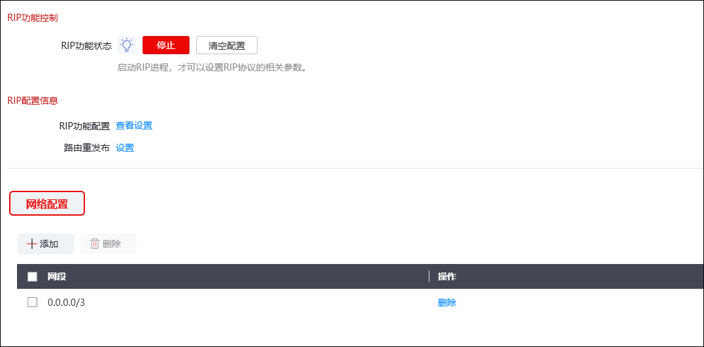
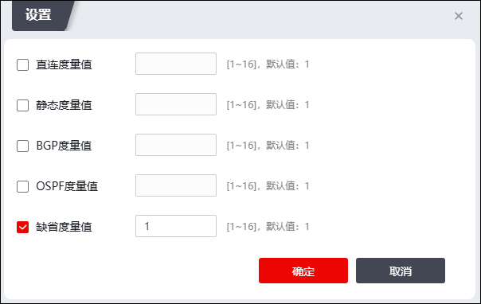
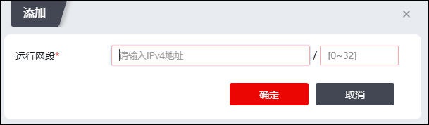

RIP（Routing Information Protocol，路由信息协议）是一种内部网关协议，用于自治系统内的路由信息的传递。RIP协议要求网络中每一个路由器都要维护从它自己到其他每一个目的网络的距离记录，“距离”定义为：从1号路由器到直接连接的网络的距离定义为1。从1号路由器到非直接连接的网络的距离定义为每经过一个路由器则距离加1。“距离”也称为“跳数”。RIP最多支持的跳数为15，即允许一条路径最多只能包含15台路由器，跳数16表示不可达。
RIP协议的特点：
1）仅和相邻的路由器交换信息；判断相邻的标准如下：如果两个路由器之间的通信不经过另外一个路由器，那么这两个路由器是相邻的。
2）路由器交换的信息是当前路由器所知的全部信息，即自己的路由表。
3）路由器之间按固定时间交换路由信息，如每隔30秒，然后路由器根据收到的路由信息更新本地路由表。
| 步骤1 | 启动或停止RIP服务 |
1）选择 ，激活“RIP”页签，如下图所示。

2）点击【启动】按钮，可以启动RIP进程。只有启动了RIP进程，才可以设置RIP协议的相关参数。
3）点击【停止】按钮，可以停止运行RIP进程。
4）点击『查看设置』按钮，弹出查看界面，可以查看RIP路由协议的配置、邻居以及转发表信息。
5）点击【清空配置】按钮，可以清空RIP配置信息；进程开启或关闭时均可清空配置信息。
| 步骤2 | 路由重发布 |
1）点击『设置』按钮，弹出重发布信息配置页面，如下图所示。

在设置RIP路由重发布时，各项参数的具体说明如下表所示。
参数 |
说明 |
|---|---|
直连度量值 |
表示允许将直连路由信息引入到RIP路由中作为外部路由信息，并可在其后的文本框中设置路由引入后的metric值。取值范围：1-16。 |
静态度量值 |
表示允许将静态的路由信息引入到RIP路由中，并可在其后的文本框中设置路由引入后的metric值。取值范围：1-16。 |
BGP度量值 |
表示允许将BGP的路由信息引入到RIP路由中，并可在其后的文本框中设置路由引入后的metric值。取值范围：1-16。 |
OSPF度量值 |
表示允许将OSPF的路由信息引入到RIP路由中，并可在其后的文本框中设置路由引入后的metric值。取值范围：1-16。 |
缺省度量值 |
设置引入其他类型路由后的默认的metric值，取值范围：1-16。系统默认缺省处度量值为1。 |
2）点击【确定】按钮完成RIP路由重发布度量值的设置，点击【取消】按钮撤销本次操作。
| 步骤3 | 网络配置。 |
1）在“网络配置”页签处点击『添加』，进入“添加”界面，如下图所示。

2）输入允许运行RIP协议的网段，点击【确定】按钮，完成设置。